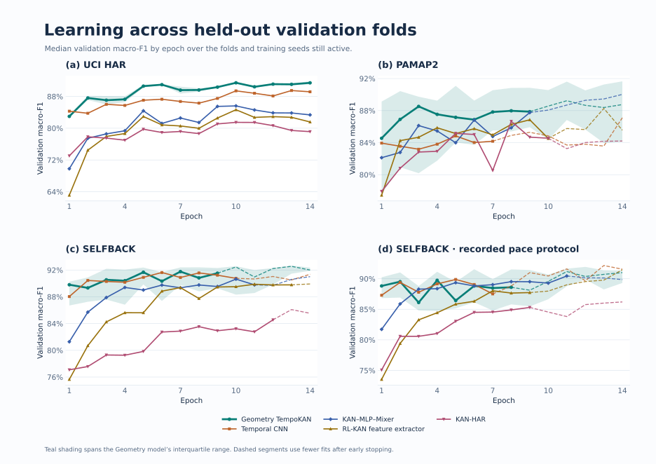
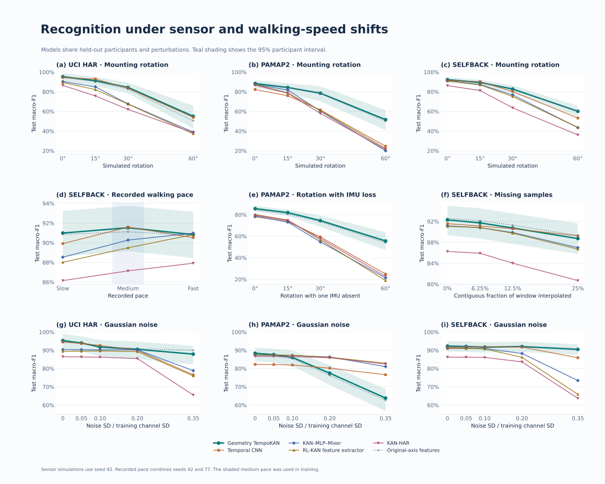
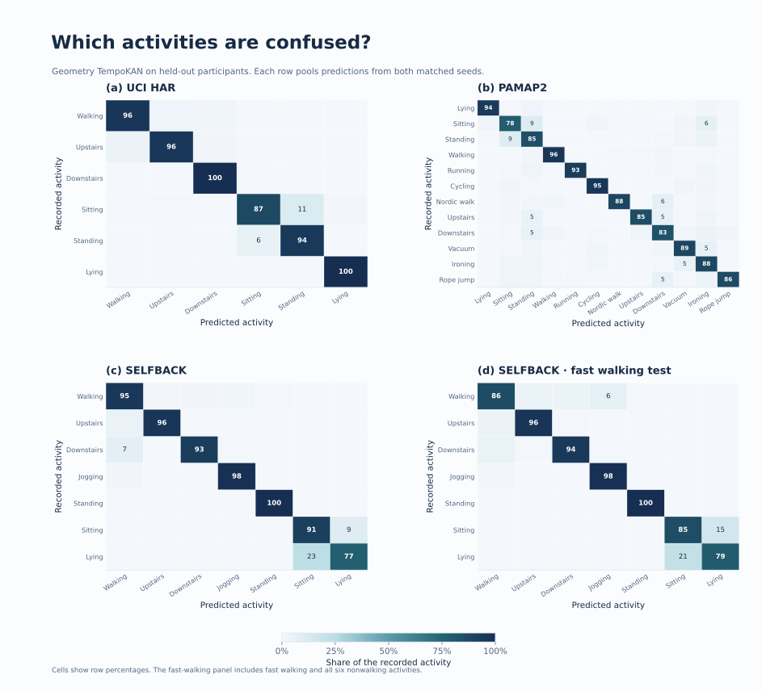
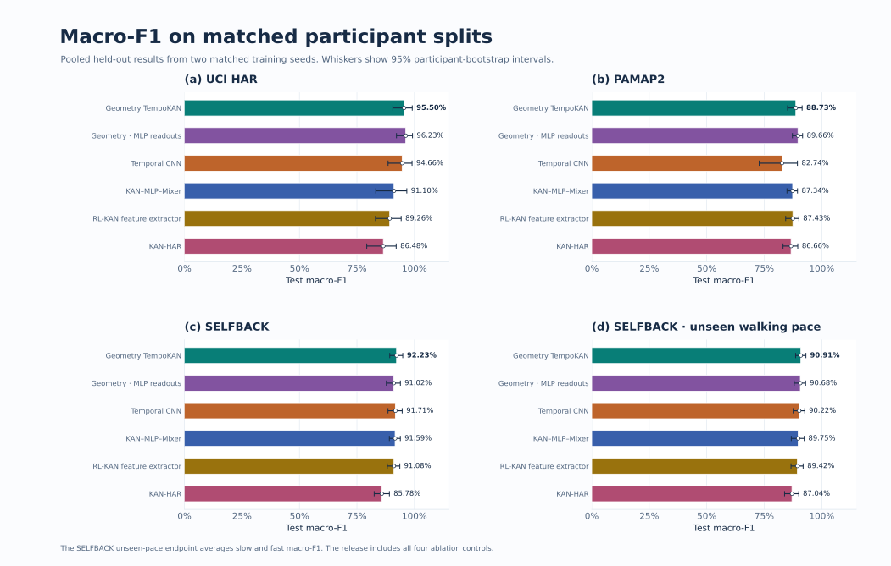

Geometry TempoKAN
Participant-disjoint activity recognition on UCI HAR, PAMAP2, and SELFBACK.
Matched benchmark
345 completed fits, including 152 independent baseline fits. All nine models use the same participant splits with training seeds 42 and 77.
| Model | UCI HAR clean | PAMAP2 clean | SELFBACK clean | SELFBACK unseen pace |
|---|---|---|---|---|
| Geometry TempoKAN | 95.50% [90.61, 99.06] | 88.73% [85.12, 91.47] | 92.23% [89.27, 94.92] | 90.91% [88.63, 93.11] |
| Temporal CNN | 94.66% [88.54, 98.98] | 82.74% [72.82, 89.42] | 91.71% [88.51, 94.67] | 90.22% [87.58, 92.60] |
| KAN-HAR | 86.48% [79.27, 92.06] | 86.66% [83.17, 89.57] | 85.78% [82.49, 89.12] | 87.04% [83.83, 90.00] |
| RL-KAN feature extractor | 89.26% [83.05, 94.23] | 87.43% [84.31, 90.07] | 91.08% [88.19, 93.65] | 89.42% [86.63, 91.91] |
| KAN–MLP–Mixer | 91.10% [83.18, 96.69] | 87.34% [84.88, 89.46] | 91.59% [89.09, 93.87] | 89.75% [86.74, 92.37] |
| Original-axis features | 94.72% [89.16, 98.91] | 88.38% [84.13, 91.33] | 92.30% [89.43, 94.98] | 90.81% [88.12, 93.16] |
| Geometry · MLP readouts | 96.23% [92.20, 99.16] | 89.66% [87.24, 91.68] | 91.02% [87.81, 93.89] | 90.68% [88.03, 92.98] |
| Without posture head | 92.12% [85.80, 97.08] | 86.24% [81.21, 89.87] | 91.45% [88.39, 94.17] | 91.80% [89.15, 94.01] |
| Without mounting augmentation | 93.58% [86.35, 98.83] | 86.52% [81.50, 90.23] | 90.94% [87.53, 93.89] | 89.74% [86.81, 92.18] |
Cells give macro-F1 with 95% participant-bootstrap intervals in percent. Each participant’s confusion matrices are averaged across the two seeds before scoring. Unseen pace averages slow and fast macro-F1 with the same nonwalking windows in each condition.
Paired baseline differences
| Comparison | UCI HAR clean | PAMAP2 clean | SELFBACK clean | SELFBACK unseen pace |
|---|---|---|---|---|
| Temporal CNN | +0.84 [-0.39, +2.52] | +6.00 [+1.90, +12.53] | +0.52 [-0.32, +1.36] | +0.69 [-0.49, +1.91] |
| KAN-HAR | +9.02 [+6.25, +12.06] | +2.07 [+1.45, +3.10] | +6.45 [+3.79, +9.33] | +3.87 [+1.71, +6.24] |
| RL-KAN feature extractor | +6.24 [+3.99, +8.83] | +1.30 [+0.13, +2.58] | +1.15 [-0.09, +2.41] | +1.49 [-0.14, +3.05] |
| KAN–MLP–Mixer | +4.40 [+2.20, +7.40] | +1.39 [-0.41, +3.00] | +0.63 [-0.93, +2.05] | +1.16 [-0.52, +3.00] |
Cells give Geometry TempoKAN minus the comparator in macro-F1 percentage points, with paired 95% participant intervals. Each draw resamples participants jointly across the models.
Matched-seed benchmark and seed ranges · Paired baseline CSV · Participant-level scores · Model size and compute · Source studies and adaptations
Controlled ablations
Each control changes one part of the Geometry model or its training recipe. The posture-head removal also reduces capacity.
| Comparison | UCI HAR clean | PAMAP2 clean | SELFBACK clean | SELFBACK unseen pace |
|---|---|---|---|---|
| Original-axis features | +0.78 [+0.12, +1.64] | +0.35 [-0.23, +1.07] | -0.07 [-0.35, +0.29] | +0.10 [-0.99, +1.23] |
| Geometry · MLP readouts | -0.73 [-2.14, +0.40] | -0.93 [-2.28, +0.17] | +1.21 [+0.15, +2.27] | +0.23 [-0.95, +1.49] |
| Without posture head | +3.38 [+1.54, +5.36] | +2.49 [+1.31, +4.13] | +0.78 [+0.22, +1.61] | -0.89 [-2.03, +0.13] |
| Without mounting augmentation | +1.91 [+0.21, +4.37] | +2.21 [+0.57, +3.98] | +1.29 [+0.28, +2.36] | +1.17 [-0.47, +2.83] |
Cells give Geometry TempoKAN minus the named control in macro-F1 percentage points, with paired 95% participant intervals. All ablations share the same two training seeds and held-out windows.
Two-seed ablation effects · Rotation-specific ablation effects · Components tested
Stress tests
351 dataset–model–severity estimates measure missing samples, Gaussian noise, and joint sensor loss and mounting rotation on clean-protocol held-out participants. The table shows Geometry TempoKAN at the highest tested severity in each sweep, with changes from its own clean score.
| Dataset and condition | Clean macro-F1 | Stressed macro-F1 | Change · pp (95% interval) |
|---|---|---|---|
| UCI HAR · 25% window interpolated | 95.35% | 94.24% | -1.11 [-1.98, -0.42] |
| UCI HAR · Gaussian noise at 0.35× channel SD | 95.35% | 87.92% | -7.43 [-9.55, -5.17] |
| UCI HAR · 60° rotation with one sensor group absent | 95.35% | 47.02% | -48.34 [-63.46, -34.20] |
| PAMAP2 · 25% window interpolated | 88.39% | 87.10% | -1.30 [-2.21, -0.51] |
| PAMAP2 · Gaussian noise at 0.35× channel SD | 88.39% | 63.85% | -24.55 [-30.25, -20.13] |
| PAMAP2 · 60° rotation with one sensor group absent | 88.39% | 55.59% | -32.80 [-40.07, -25.14] |
| SELFBACK · 25% window interpolated | 92.31% | 88.73% | -3.58 [-4.45, -2.74] |
| SELFBACK · Gaussian noise at 0.35× channel SD | 92.31% | 90.50% | -1.81 [-2.93, -0.68] |
| SELFBACK · 60° rotation with one sensor group absent | 92.31% | 54.25% | -38.06 [-43.12, -32.73] |
All extended simulation sweeps use seed 42. Sensor loss removes a complete IMU on PAMAP2 and one three-axis sensor group on UCI HAR and SELFBACK. Zero degrees in the joint sweep still includes the sensor outage. The rotation–outage contrast measures how much the joint macro-F1 change departs from adding the two single-stress changes.
All models and severity levels · Paired stress-test effects · Rotation and outage contrasts · Per-activity changes at the highest severity · Measured walking recall and pace errors · Two-seed corruption estimates
Confidence and selective prediction
These rows compare Geometry TempoKAN’s confidence with observed correctness. The threshold table records coverage and error among accepted predictions for all nine models.
| Test context | Seed | Top-label accuracy | Mean confidence | ECE | Top-label Brier |
|---|---|---|---|---|---|
| UCI HAR · clean | 42 | 95.28% | 94.11% | 1.52% | 0.0325 |
| UCI HAR · clean | 77 | 95.66% | 94.99% | 1.50% | 0.0288 |
| PAMAP2 · clean | 42 | 88.39% | 87.98% | 1.20% | 0.0760 |
| PAMAP2 · clean | 77 | 89.13% | 87.16% | 2.12% | 0.0688 |
| SELFBACK · clean | 42 | 93.56% | 94.86% | 1.69% | 0.0509 |
| SELFBACK · clean | 77 | 93.41% | 95.27% | 2.19% | 0.0531 |
| SELFBACK · unseen pace | 42 | 91.41% | 92.59% | 1.92% | 0.0670 |
| SELFBACK · unseen pace | 77 | 89.72% | 92.75% | 3.41% | 0.0796 |
Expected calibration error (ECE) uses ten equal-width bins. The top-label Brier score measures squared error between the predicted label’s confidence and its correctness. Unseen pace pools slow and fast walking with each nonwalking window counted once.
All 126 calibration contexts · Reliability bins · All 756 confidence-threshold results
Composite figures




Data and tables
- Participant split assignments
- Seed-42 benchmark including the checkpoint average and per-seed results
- Rotation performance
- Two-seed confusion matrices and per-class precision, recall, and F1
- Participant-level score distributions and Prediction agreement between seeds
- Per-fold learning curves and executed configuration manifest